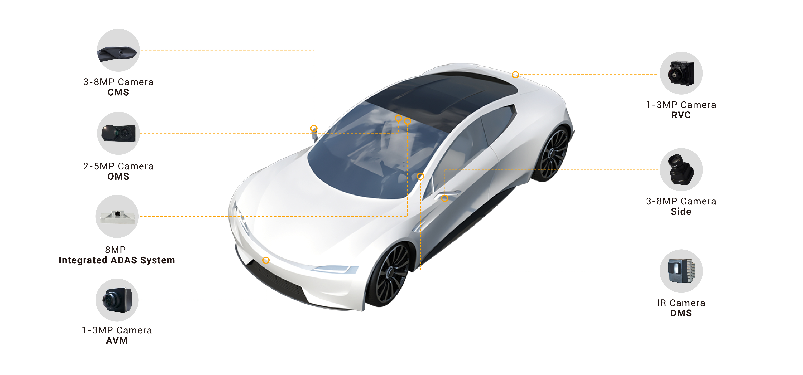
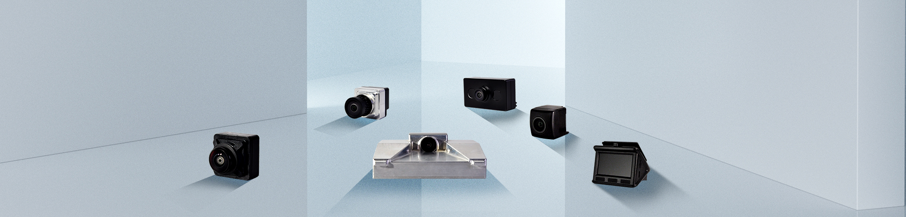
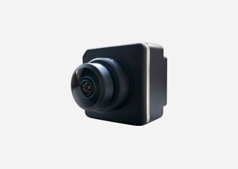
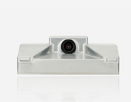
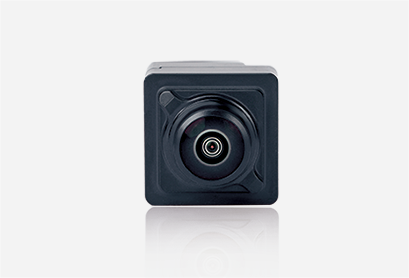
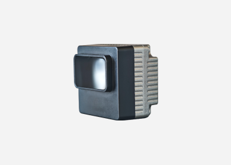
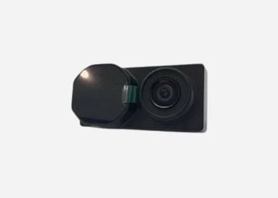

Visual Sensing
VT-Sensing / VT-NaviMulti-camera perception with deep learning for object detection, lane marking, blind-spot monitoring and surround view.
Cost ControlTechnology ControlFlexible CustomizationTechnology Reuse
Multi-camera perception with deep learning for object detection, lane marking, blind-spot monitoring and surround view.
Fusing vision, inertial and wheel-speed data for high-accuracy localization and mapping.
Domain controller platform with automotive-grade safety architecture for planning, decision and execution.
VT-Sensing visual sensing technology is built on VOYISL's mature automotive foundation and reused across multiple tracks, including low-altitude drones, agricultural robots and embodied robots. Combined with self-developed mass-production high-performance perception cameras and intelligent perception algorithms adapted to diverse operating conditions, it delivers vehicle-grade perception technology strictly validated through vehicle testing, migrating across industries to meet the software-hardware integrated perception needs of each business line under complex conditions and different functional safety levels.


| Camera | Resolution |
|---|---|
| RVC Rear View | 1M-2M |
| AVM/APA Surround Parking | 1M-3M |
| FVC Front View | 8M |
| SVC/CMS Side View / CMS | 2M-3M / 3M |
| DMS Driver Monitoring | 2M-3M |
| OMS Occupant Monitoring | 5M |

AVM/APA Surround Parking
FVC Front View
SVC/CMS Side View
DMS Driver Monitoring
OMS Occupant Monitoring